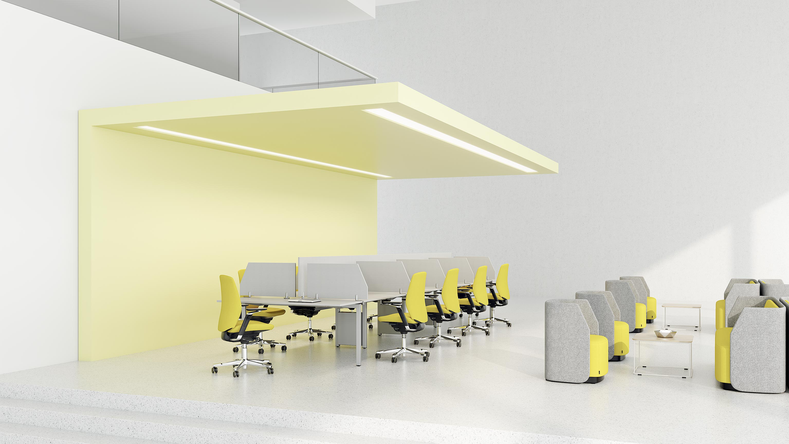
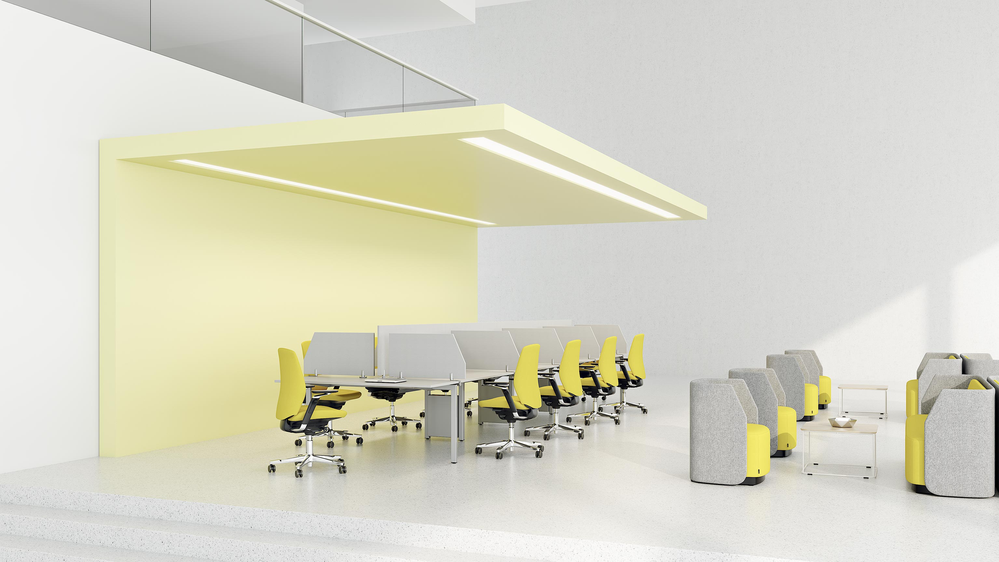

Den ultimata arbetsstolen

Sittandets konst.
75 år av erfarenhet. En stol. Vi har lagt in all vår kunskap i Capella.
Den främjar aktivt sittande och erbjuder det bästa inom funktion, estetik
och välbefinnande.
Läs mer
Capella är en ny typ av arbetsstol. Skapad för att få din kropp i rörelse.
Att sitta rätt handlar nämligen om att röra på sig. Kärnan i Capella är den
nyutvecklade innovativa FreeMotion-mekanismen. Den ger välbalanserade
mikrorörelser i sitsen och ett aktivt sittande. Allt för att du ska må bra.
Med sina unika egenskaper sammanfattar Capella allt det som vi på Kinnarps
vet är viktigast för en arbetsstol. Du sitter bekvämt och ergonomiskt korrekt.
Och har många inställningsmöjligheter för att du ska hitta din optimala
sittställning. Med de intuitiva reglagen gör du även enkelt stolen till din
egen.
 


Vår nya Freemotion feature adderar rörelse till stillasittande
Med mikrorörelser i sätet får FreeMotion din kropp att röra sig, även när du
sitter ner. Detta förbättrar avsevärt din energinivå, ditt välbefinnande och
hjälper dig att göra ett bättre jobb.
Capellas ryggstöd har designats för att följa din ryggrads naturliga kurva
Allt kan anpassas efter din kropp
- Nackstöd
- Rygg
- Sits
- Armstöd
- Gungmotstånd
- SafeBack-funktion
Varianter
CF110
Klädd sits och låg rygg. Utan armstöd. Kryssunderrede av plast i svart, och gasfjäder i svart.
| Sittdjup (mm) | 400-450 |
| Sitshöjd (mm) | 400-530 |
| Sitsbredd (mm) | 480 |
| Sitthöjd (belastad) (mm) | 400-530 |

CF111
Klädd sits och låg rygg utan armstöd. Kryssunderrede av plast i svart och gasfjäder i svart.
| Sittdjup (mm) | 400-450 |
| Sitshöjd (mm) | 400-530 |
| Sitsbredd (mm) | 480 |
| Armstödshöjd (mm) | 190-280 |
| Sitthöjd (belastad) (mm) | 400-530 |

CF120
Klädd sits och mellanrygg. Utan armstöd. Kryssunderrede av plast i svart och gasfjäder i svart. Hjul för hårda golv.
| Sittdjup (mm) | 400-450 |
| Sitshöjd (mm) | 400-530 |
| Sitsbredd (mm) | 480 |
| Sitthöjd (belastad) (mm) | 400-530 |
CF121
Klädd sits och mellanrygg. Med armstöd i svart. Kryssunderrede av plast i svart och gasfjäder i svart. Hjul för hårda golv.
| Sittdjup (mm) | 400-450 |
| Sitshöjd (mm) | 400-530 |
| Sitsbredd (mm) | 480 |
| Armstödshöjd (mm) | 190-280 |
| Sitthöjd (belastad) (mm) | 400-530 |